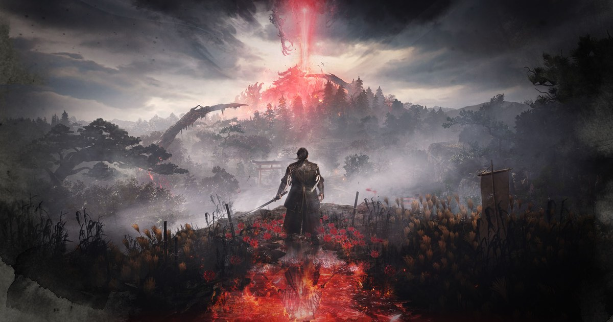

Nioh 3 is coming to Xbox on January 28, 2027 — the series' first time on the platform
Team NINJA and Koei Tecmo announced November 24 that Nioh 3 and the Complete Edition arrive on Xbox Series X|S on January 28, 2027 — the first time the series has ever been on Xbox — with the Bloody Insurrection DLC landing December 17.

Disclosure: this post contains affiliate links. I earn a commission on qualifying purchases.
Xbox players are finally getting Nioh. Team NINJA and Koei Tecmo announced on November 24 that Nioh 3 and Nioh 3: Complete Edition are coming to Xbox Series X|S on January 28, 2027 — the first time the series has ever appeared on an Xbox console. The announcement kicks off the 10th anniversary celebrations for the Nioh franchise.
"2027 is poised to be the 'Return of the Ninja' as for the first time ever, the Nioh series is making its debut on XBOX," Xbox Wire said in the announcement post.
What Xbox players are getting
The Complete Edition is the full package: the base game plus both DLC expansions, Hell Rising and Bloody Insurrection. The second expansion, Bloody Insurrection, arrives first — December 17, 2026 for PlayStation 5 and PC — and both expansions add new story content, bosses, weapons, abilities, and endgame content, including the Battlefield of Carnage, a 100-floor gauntlet of battlefields overrun with enemies and bosses.
The Complete Edition is priced at $59.99, with Xbox Play Anywhere support — buy it once and you get the Xbox console and Xbox PC versions. Pre-orders are open now. The standalone base game will also be available on Xbox the same day.
Why now
Nioh 3 launched February 6, 2026 on PlayStation 5 and PC, nearly a year before this Xbox debut. Xbox Wire was candid about the timing: after years of experimenting with the Nioh formula, and following what the studio called the "incredible" Xbox fan reaction to Ninja Gaiden 4, Team NINJA decided the moment was right — just in time for the series' 10th anniversary.
The game itself is Team NINJA's dark samurai action RPG, starring Tokugawa Takechiyo, a would-be shogun fighting a yokai army led by his own younger brother. It is the series' first open-field entry, and its signature twist is the dual combat system: players switch seamlessly between the classic Samurai style and a brand-new Ninja style built around speed, aerial attacks, and elusiveness.
Another PlayStation exclusive crosses over
Nioh 3's Xbox move continues a trend that has accelerated all year: former PlayStation exclusives finding a second home on Xbox. For Nioh specifically, the wait was a long one — the series has been PlayStation-and-PC only since the original Nioh launched in 2017, and the first two games still have not come to Xbox. Xbox players get to jump straight into the third entry, and Team NINJA says no prior series knowledge is needed to follow the story.
For soulslike fans on Xbox, January 28 is now circled. The hardest part of Nioh has always been the game itself. The wait, at least, is over.
Sources: Nioh 3 Is Coming to XBOX in 2027 (Xbox Wire) · KOEI TECMO Celebrates the 10th Anniversary of the Nioh Franchise (Koei Tecmo America) · Nioh 3 DLC 'Bloody Insurrection' launches December 17; Complete Edition launches January 28, 2027 alongside Xbox Series version (Gematsu) · Nioh 3 Complete Edition for Xbox launches on January 28 (RPG Site)
Gear up: Razer — mice, keyboards, headsets and laptops.